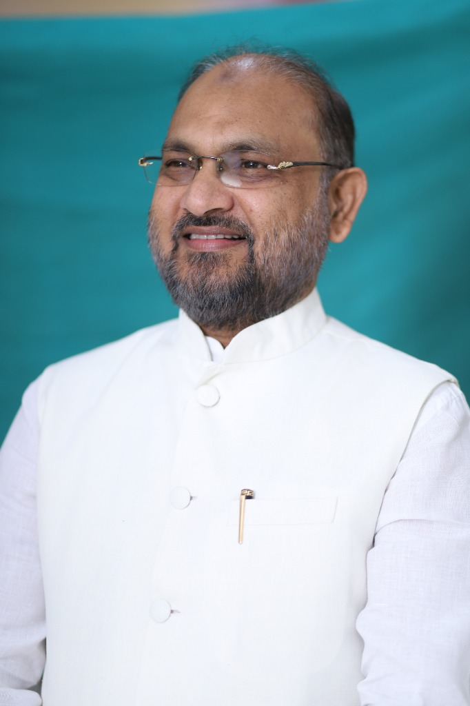

of India's mineral production value from Odisha — Iron Ore Rank 1 (55%), Chromite Rank 1 (100%), Bauxite Rank 1 (72.7%). 80% of state non-tax revenue leaves as raw material.
IBM Annual Report 2022–23 · Ch.20
43.7% of India's mineral wealth comes from Odisha. Its people remain among the poorest in the country. That ends here. 16 unbreakable pledges.
of India's mineral production value from Odisha — Iron Ore Rank 1 (55%), Chromite Rank 1 (100%), Bauxite Rank 1 (72.7%). 80% of state non-tax revenue leaves as raw material.
IBM Annual Report 2022–23 · Ch.20
maternal deaths per 1 lakh births — nearly double the national average of 88. Doctor ratio: 1:1,735 — far below WHO standard. 64.2% of children aged 6–59 months are anaemic.
SRS 2021–23 · NFHS-5
secondary school dropout rate (2022–23) — above national average. Only 40% of Class III rural students can read a Class II text. 68% of state university faculty posts vacant.
ASER 2024 · CAG Report
per capita income — 22% below the national average of ₹2.11 lakh. 1,237 villages without mobile connectivity. Lakhs of Odias migrate every year for low-paid work.
MoSPI 2023–24
We mine the iron ore — the cars are built elsewhere. We dig the bauxite — the aluminium goods are made elsewhere. We supply the chromite — the value is captured elsewhere. Odisha's natural endowment is extraordinary. Two decades of governance answering to outside priorities have been our betrayal. It is time for governance that answers only to Odias.
PLEDGE 05
ରୋଜଗାର ଓଡ଼ିଶାLakhs of Odias migrate every year — not by choice, but because Odisha has not built the industries that should have employed them.
PLEDGE 12
ମାଟିରୁ ସମୃଦ୍ଧିOdisha's farmers receive no legal price guarantee, no timely payment, and no reliable irrigation. The Mahanadi — lifeline of 50 lakh farmers — is threatened by upstream diversion while Odisha waits for a Tribunal award referred in 2018. OJC delivers in year one.
PLEDGES 08, 09, 10
ସଶକ୍ତ ନାରୀOdisha ranks among the top three states for crimes against women. 40,947 cases in 15 months. Women's LFPR is 48.7%.
From the fields of Koraput to the docks of Paradeep. From the Adivasi villages of Mayurbhanj to the classrooms of Bhubaneswar.
Legal MSP guarantee for paddy and all major crops. Irrigation expansion — Lower Suktel, Telengi, Mahendratanaya — projects delayed for years, delivered in the first term.
• Promoting skill development, employment, and entrepreneurship among youth from school and college levels.
• We support Women's empowerment.
Lakhs of Odias migrate for low-paid work every year — not by choice. OJC's Odia-first jobs framework ends migration by compulsion.
Tribal Land Protection Act enacted. Free, Prior, and Informed Consent from Gram Sabha mandatory.

Mohammad Moquim
Founding President, Odisha Janta Congress Party
"Bande Utkal Janani! Jai Odisha! Mora Priya Odishabasimaane — In a nation of 140 crore, even if we need to make just one needle, we have the strength of 140 crore hands, and together, we can create not one, but 140 crore needles. This is the power of collective effort. Odisha must harness this strength to build industries, generate employment, and create opportunities driven by its own people."
The people of Odisha have endured decades of broken expectations, weak accountability, and governance that too often serves the powerful instead of the common citizen. The Odisha Janta Congress Party has a clear conviction: Odisha belongs to Odias. Its rivers, land, forests, economy, and institutions must work for the people of this state. The era of empty announcements must end and be replaced by measurable performance.
OJC is the party of every Odia — not one caste, one community, one religion. Inclusion backed by named schemes and dedicated budgets.
Tribal Land Protection Act
71 lakh SC Odias
39.3% of Odisha
Minority Welfare Commission
~12 lakh PwD
Not slogans. Each pledge carries a named scheme, a number, and a public accountability mechanism.
We believe in secular politics that respects every religion, community, and citizen equally, ensuring governance based on equality, justice, and constitutional values.
We are committed to building a youth-centric political movement by encouraging young people to participate in leadership, policymaking, innovation, and nation-building.
We will work towards women's empowerment by promoting equal opportunities, safety, education, leadership, and economic independence across every section of society.
We remain dedicated to the welfare and upliftment of Dalits, marginalized communities, Scheduled Tribes, backward classes, and every citizen deserving equal opportunities.
We encourage active public participation in governance, ensuring that people's voices contribute to decision-making, accountability, and the development of society.
We give the highest priority to the development and welfare of farmers by supporting sustainable agriculture, fair opportunities, and rural prosperity.
We are committed to safeguarding the rights of tribal communities over their land, forests, natural resources, and traditional way of life.
We will preserve, promote, and strengthen Odisha's identity by supporting its language, literature, culture, heritage, history, and unique traditions for future generations.
We are committed to protecting democratic values by encouraging ethical governance, transparency, accountability, and stronger democratic participation from the grassroots level.
We will safeguard the constitutional rights of every individual, ensuring equality, justice, dignity, and protection for every section of society.
We are dedicated to protecting the social, political, and economic rights of citizens while promoting fairness, opportunity, and inclusive development.
We believe in transparent and accountable governance by promoting ethical public administration, responsible leadership, and openness in political processes.
We will strengthen disaster management systems to improve preparedness, response, recovery, and resilience against natural calamities across Odisha.
We support community-driven environmental conservation and effective climate action to protect ecosystems while ensuring sustainable development for future generations.
We will promote skill development, employment, and entrepreneurship among young people from school and college levels to create a stronger and self-reliant workforce.
We are committed to protecting and responsibly utilizing Odisha's natural resources to ensure sustainable growth, environmental balance, and a brighter future for all.
Your district coordinator will reach you within 48 hours.
All 30 districts. Every Odia counts.